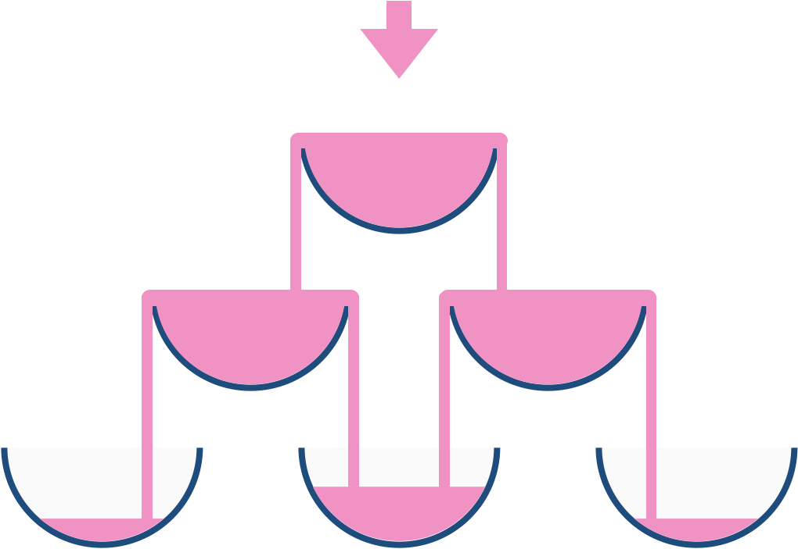

799. 香槟塔
从顶层往下逐层模拟：每个杯子只记「流入总量」，超过 1 的部分对半分给下一层相邻两杯；目标杯取 min(1, 流入量)。
思路
- 只需要目标行，用一维数组滚动：
row是当前层每个杯子的流入量，算完换next。 - 杯子容量是 1：
excess = max(0, 流入量 − 1)才往下流，next[i]和next[i+1]各加 excess/2。 - 循环
query_row次，正好停在与目标同层的下一层之前；答案min(1, row[query_glass])。 - 流入量可以远大于 1（大
poured也不溢出 double），不用截断中间层。
图解
最优解
1class Solution {2 public double champagneTower(int poured, int query_row, int query_glass) {3 // row[i]：当前层第 i 个杯子的流入总量（超过 1 的部分会往下溢）4 double[] row = { poured };5 for (int r = 0; r < query_row; r++) {6 double[] next = new double[r + 2]; // 下一层多一个杯子7 for (int i = 0; i <= r; i++) {8 double excess = Math.max(0, row[i] - 1); // 装满 1 之后才往下流9 next[i] += excess / 2; // 左右两杯平分溢出量10 next[i + 1] += excess / 2;11 }12 row = next;13 }14 return Math.min(1, row[query_glass]); // 杯子容量最多 115 }16}题目
我们把玻璃杯摆成金字塔的形状，其中 第一层 有 1 个玻璃杯， 第二层 有 2 个，依次类推到第 100 层，每个玻璃杯将盛有香槟。
从顶层的第一个玻璃杯开始倾倒一些香槟，当顶层的杯子满了，任何溢出的香槟都会立刻等流量的流向左右两侧的玻璃杯。当左右两边的杯子也满了，就会等流量的流向它们左右两边的杯子，依次类推。（当最底层的玻璃杯满了，香槟会流到地板上）
例如，在倾倒一杯香槟后，最顶层的玻璃杯满了。倾倒了两杯香槟后，第二层的两个玻璃杯各自盛放一半的香槟。在倒三杯香槟后，第二层的香槟满了 - 此时总共有三个满的玻璃杯。在倒第四杯后，第三层中间的玻璃杯盛放了一半的香槟，他两边的玻璃杯各自盛放了四分之一的香槟，如下图所示。

现在当倾倒了非负整数杯香槟后，返回第 i 行 j 个玻璃杯所盛放的香槟占玻璃杯容积的比例（ i 和 j 都从0开始）。
示例 1: 输入: poured(倾倒香槟总杯数) = 1, query_glass(杯子的位置数) = 1, query_row(行数) = 1 输出: 0.00000 解释: 我们在顶层（下标是（0，0））倒了一杯香槟后，没有溢出，因此所有在顶层以下的玻璃杯都是空的。 示例 2: 输入: poured(倾倒香槟总杯数) = 2, query_glass(杯子的位置数) = 1, query_row(行数) = 1 输出: 0.50000 解释: 我们在顶层（下标是（0，0）倒了两杯香槟后，有一杯量的香槟将从顶层溢出，位于（1，0）的玻璃杯和（1，1）的玻璃杯平分了这一杯香槟，所以每个玻璃杯有一半的香槟。
示例 3:
输入: poured = 100000009, query_row = 33, query_glass = 17 输出: 1.00000
提示:
0 <= poured <= 1090 <= query_glass <= query_row < 100
题面取自力扣当前版本。
数据快照 2026-11-04。题面版权归力扣所有，本站点仅供本人学习使用，请勿对外发布。